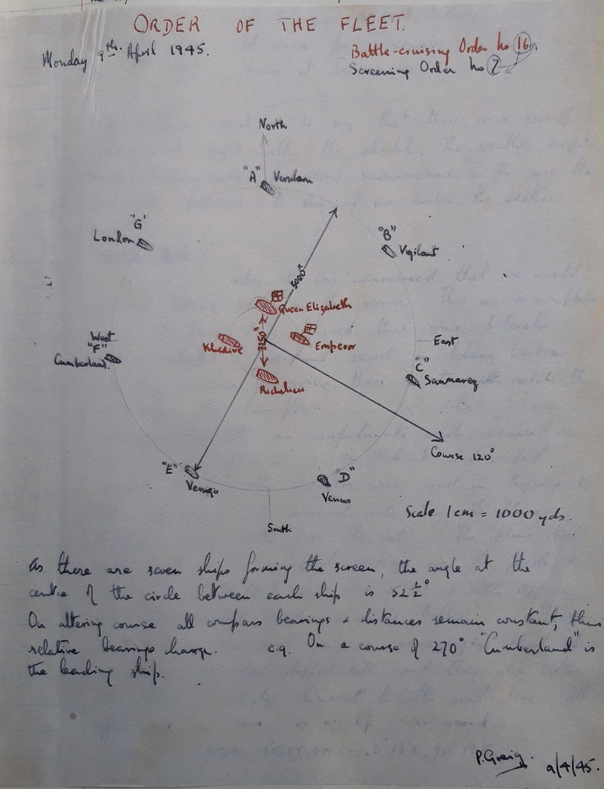

In the afternoon Midshipmen Hamnet, Fluker and I joined the "Cumberland". She is in berth no 7, up Malay Cove. We arrived on board about 1600 and after our baggage had been efficiently dealt with we entered the gunroom. Mid. harris then showed us round the Upper Deck; it is not very difficult to find one's way around the ship as everything of course, is on such a much smaller scale that a battleship. We then saw Commander Robson who said he would give us forty eight hours to learn something about the ship
I spent the forenoon walking around the lower-deck, finding out numbers of messdecks and various other places of interest such as the Lower Steering Postion, 4" Calculating Positions, 8" T.S. and the Aodic(???) compartment. Eight 8" and eight 4" seem a pretty effective main and secondary armament for a cruiser but there seems to be rather a sparity of close range weapons.
At about 1000 the Captain saw us on the Quarter Deck. He gave us some useful advise and, among other things, warned us not "to leave our exams till the last moment". Personally I find it very difficult to do much work out here as the climate seems to completely sap one's energy.
The war news seems very satisfactory at the moment. Germany's outlook could not be much more black and it is rather surprising how stubbornly the Hun is fighting. Those parts of Germany now in Allied hands are now fighting an all out campaign to win the peace. Such claims that "75% of the people are ant Nazi and have waited for months for the Allies" sound particularly ominous. It is to be hoped this propoganda will have no success but at any rate it is certain that it will carry no weight with countries which have been under German occupation. While on the subject I htink that Churchill's attitude towards Italy seems extremely weak. She is now being represented by an ambassador in London! Despite her dastardly attacks on Abyssynnia, Albania, Greece and France she is being treated like a long-lost ally.
Divisions and church were held as usual. The former consisted of a march-past not an inspection.
The North-East Monsoon is breaking and for the last two days it has been comparatively cold; I only hope this continues. A drop of nearly 20 degrees on the thermometer is very pleasant indeed. I must say I'm rather envious of those in my last ship who are going to Sydney. I'm told it is an excellent climate.
In the evening we saw a film: "The Lamp Still Burns". It was the last production by Leslie Howard, who was unfortunately killed about a year ago, while flying back from Portugal
In the forenoon P.O. Redgrave, the Chief Boatswaing's mates gave us instruction in seamanship. I learnt quite a lot; apart from knowing the stuff very thoroughly himself he is able to explain it very clearly.
The recent changes in administration are now beginning to take place. The late C.in C Eastern Fleet, Admiral Sir Bruce Fraser, has, I'm told, flown to Australia to take up his appointment as C.in C. British Pacific Fleet. "Howe" has gone to Colombo to pick up his staff. Vice-Admiral Sir Arthur Power has been promoted and is taking up his appointment as C-in-C East Indies Fleet in H.M.S. "Caradoc"(???). Rear Admiral Walker, wearing his flag in "London", is now Senior Naval Officer Afloat.
In the evening the Gunroom Barber's Pole was stolen by a midshipman from the "London". Only two day ago "London" took "Howe's" Barber's Pole on the night before "Howe" left harbour. Thus there should now be two Barber's Poles in the "London"'s gunroom and by dint of hard fighting we should be able to retrieve one if not both.
The rain continues and it is still quite cold. Apart from seamanship instruction in the forenoon, this time by P.O. Mills, and a lecture on Radar by Lieutenant Blundell in the Dogs, I did very little today.
Life is exceptionally dull in this harbour but on the whole the morale of the troops is pretty good. Given more beer and better facilities ashore it would, of course, undoubtedly be improved. The shortage of water in this ship, or for that matter all ships in the harbour, seems to me to be rather unneccessary. There should be a far greater number of water-boats; this would enable them to come round regularly - say, three times a week. Considering that Trincomalee, apart from being an excellent natural harbour, is definitely a place of strategical importance. It seems incredible that it has not been developed better.
H.M.S. "Victorious" left harbour today.
The weather became very bad and a gale warning was received. In consequence a 21/2" slip rope was rove aft and another 61/2" was flaked out ready for use. Boats were hoisted in and the quarter-deck awning was furled.
"Swiftsure" entered harbour today. She has only just come out from the U.K., in fact she was first commissioned last May. She is a modified Colony class cruiser. The only real difference is that she forfeits 'X' turret ( 3 6") for two 4" twin mountings. And, of course, she is equipped with the latest radar sets -277 (surface warning). We will not see much of her as she will be forming the new British Pacific Fleet.
At about 0700 the Hands fell in to prepare for leaving harbour. At 0750 Special sea dutymen were sounded off and in less than an hour we had passed the boom. "London", flagship of the 5th C.S. was guide. We formed up in Order 1 - "Suffolk" 3 cables astern of "London" with us 3 cables astern of "Suffolk". The object of our putting to sea was a day's concentrated gunnery excercises. The first shoot was barrage firing at a sleeve target by both the 8" and 4". Next on the programme was a Dive Bombing Excercise. No firing, of course, but the Avengers were roaring down over the ship at every conceivable angle giving the close range weapons valuable practice at 'following'. At 1530 we carried out an Anti-Aircraft Blind Barrage Excercise throw-off shoot. 8" and 4" but I found it difficult to see what we were doing as there were such a number of different bursts. A Night Air Defence Excercise followed. On completion "London" departed and returned to Trincomalee. Being next senior ship we gook guide. At 1930 "Newcastle" joined company; Suffolk was despatched undependently to carry out her part as a 'surface raider' in the Night Encounter Excercise.
This commenced at 2030 - "Suffolk" acting as the raider with "Newcastle" and "Cumberland" defending. It was a bright moonlit night which was fortunate as our 273 Surface Warning et broke down and we were dependent on reports from "Newcastle" for our plot. The raider was reported at 23,000* and soon afterwards the Captain saw her and altered course toward. We then opened up with star-shell. It was not very accurate but Newcastle was also firing and had it been a pitch-black night "Suffolk" would undoubtedly have been well illuminated.
At 2240 the excercise was completed and we reduced to 16 knots to allow "Suffolk" to regain station. Course was due north until midnight.
Zig-zag no 11 was in force and we altered course twice during the night, at 0330 and 0550. At dawn Close Range firings were carried out, several runs were made by the towing aircraft until the sleeve was shot down. A Range and Inclination Excercise and then a Blind Radar Excercise followed. "Newcastle" left and we proceeded with a Throw-off shoot at "Suffolk" (this was in lieu of a Battle Practice Target which for some reason did not appear). We fired 16 salvoes in all -4 from each turret.
Soon afterwards all executive officers were piped to muster on the bridge for instruction in Anti Submaring procedure. The drill is as follows: On seeing a periscope, if before 60 degrees on either bow, speed is increased to 25 knots and course is altered towards . A W/T message should then be made to the shore authorities Comic T etc. A depth charge should be dropped every 500* at a depth setting of 50'. If the submaringe is abaft this bearing turn away and increase speed; again making reports by W/T.
Two P.C.O.s and two O.O.W.s were then chosen to take over for two dummy attacks. The periscope was represented by a dan-buoy with a red flag. Two depth-charges were dropped at each 'attack'.
Special Sea Dutymen and Cable Party were sounded off at 1400 and the Port watch cleaned into tropical rig and fell in for entering harbour. We came in astern to our berth. There was a fairly stong wind on our port beam which mad it difficult to keep our stern in line with the buoy(???Pic).
A tug was in attendance and she assisted in pushing our stern over to the stern buoy. We were secured by 1520.
A further stay in this harbour seems inevitable. Harbour routing in Trincomalee is exceedingly monotonous and the climate invites lethargy. Consequently I find writing up a journal somewhat laborious.
On Monday H.M.S. Black Prince and H.M.S. Argonaut entered harbour; they are recent additions to the Eastern Fleet but I imagine they will be going straight out to the Pacific. The former was in action off Normandy on D-day.
H.M.S. "London" is doing the next convoy duty to Australia. Rear Admiral Walker's staff has been temporarily posted ashore in Trincomalee. It is rumoured that our next move is a short stay at Palk Bay, on the northern tip of Ceylon.
At the moment, about 60% of our Marines are ashore on a 'jungle' course. It is very rigorous training and includes a route march to Colombo, a distance of 150 miles. They should be returning on Wednesday. On December 8th H.M.S. "Renown" left to go to Durban, where she will go into dock. As there is only one large dock, I presume that "Queen Elisabeth" will soon be returning to Trincomalee. The function of the East Indies Fleet is, as far as I can see, exactly the same as the old Eastern Fleet. It will doubtless be used in support of any landings in Burma, Malaya, Sumatra etc. Today the Daily Orders included a note about supplying the morring swivel in the foc'sle. This should be very interesting as one doesn't often get the opportunity of seeing the evolution of 'moor ship'(???) carried out.
In the evening an excellent boxing competition took place against the "Suffolk". It was raining quite hard but an awning was spread over the boxing ring and the whole thing went off very successfully. We beat the "Suffolk" by five fight to three.
During the forenoon the hands secured for going to sea. Awnings were furled and the stanchions stowed away. Life-lines were rigged and a slip wire was rove aft. At 1130 special sea dutymen was sounded off and at 1215 we passed the boom. Three quarter of an hour is pretty good going!
At 1400 the 4" action quarters closed up for a sleeve-target shoot. My action station is Officer of Quarter 4" (post). I like this very much as, before now, I have never had much idea as to what actually goes on 'at the guns'. The shoot was rather erratic and could not be classed as good. For these practice shoots all the ammunition is likely to be required is supplied beforehand by the Gunner's party. The system of ammunition supply in action firing is not very efficient on. On P2 the 2nd Motor Boat is very much in the way; it actually prevents ammunition coming up from the Upper Deck for the left gun. The whole system is rather clumsy and it is surprising that the 4" mountings were ever fitted in the H.A. gun deck rather that the Upper deck itself. Apart from anything else they increase top-weight!
Close-range firings then commenced. At 1545 a Fighter Direction Excercise and a Radar Height Calibration Excercise took place. At 1700 a floating target was dropped over the side and at a range of about 3000* the 4" opened fire on it in local. This was quite good considering both range and deflection had to be estimated. Something was seriously wrong with the deflection sight on P1. We opened fire with deflection of 10 left; the splashes were about 20 degrees to the right. after a series of 'left eights' we eventually started to straddle the target. On ceasing fire the sight was reading 72 knots left! The Gunnery Officer immediately summoned an Ordnance Artificer(???) to check the sights. The 8" then opened fire with sub-calibre; the results were quite satisfactory. For the rest of the day we cruised up and down off Trincomalee so as to avoid passing through Palk Strait during the hours of darkness. The Hands were closed up...
NOON POSITION: Not available. 2000.8deg34'N,81deg34E
... in cruising watches throughout the night.
We altered course to the northwards and proceeded at 16 knots. There was a three not current against us and we carried out zig-zag no 8. By dawn we had just passed ... light. We rounded Cape Pedro at 1030 and then entered Palk Strait. At one point there is only 51/2 fathoms and as we draw 221/2 feet there was not very much to spare. We steamed on towards Adam's Bridge and at 1430 we let go the starboard anchor and came to off the eastern end of Pambau Island. The island is joined to the mainland of India by a steel bridge which, in the centre, acts as a drawbridge to allow small vessels to pass through. The 1st Motor-boat was lowered and several senior officers went off to try and find out what facilities there were for putting the men ashore. They did not get inshore owing to the dangerous coral reefs. Later N.O.I.C. (in charge of a base for M.T.B.s) sent a signal to the effect that there was a jetty and also that he could arrange some cinema performances. The swell, however, was considerable and it was not possible to take advantage of his offer.
Divisions took place as usual but there was no march past. Later in the forenoon the Captain invited all officers to a glass of wine on the quarter-deck. Wine and conversation flowed quite freely and I got to know quite a few officers whom I had hardly seen before.
Both cutters and both whalers took part in the Sailing race; there was a pretty strong breeze and the boats were moving along very nicely. A lot has been done to 'entertain the troops' during our short stay here. There is not much to do ashore and the more recreation taken on board the better. In the Dogs the Gunroom were challenged by the Wardroom to a game of deck coits. The latter won 2-1. Mud fishing has been taking place over side and a price of 10/- has been offered for the largest fish. So far nothing very large has been caught although Doctor Bealby caught a baby shark this afternoon! In the evening the film "My Sister Eileen" was shown on the quarter-deck. In some parts it was very witty but on the whole it was not a very good film.
Tomorrow the ship is shifting anchorage to a point off the South Eastern tip of Delft Islands, a distance of 37 miles. It has been decreed that the following midshipmen are to take the ship to sea:
I had to go down to the Engine Room at 0400 and then to the Boiler Room (for'ard) for 'flashing up'. Only four boilers were required and so only one boiler room was used, we did not prepare to steam in units(???). Personally I am not very interested in it but I quite see that it is essential to know the duties of the Engine room department especially if you are likely to have to give them orders from the bridge.
It was ordered that we should be shortened in to two shackles by 0710 and the anchor to be away by 0715. The ship was 15 minutes late, the fly in the ointment being the Daily Orders:
POSITION AT 0800: 9deg24'N,79deg15'E
As can be seen from the above this only allowed 20 minutes for the anchor to be weighed. To add to this much time had to be used in scrubbing the cable - the bottom being exceptionally muddy - and consequently it was 0730 before the anchor was away. The midshipmen then secured.
At 1000, off the South-Eastern end of Delft Island, the port anchor was let go and a few minutes later the starboard anchor. Eventually ... was middled and the evolution of Moon ship was executed. It was completed in very good time and I, for one, found it extremely instructive.
We then unmoored ship and left the starboard anchor at shackles.
The Captain gave permission for all midshipmen to go ashore at 0800 til 1600. Sub.Lt Ree managed to get hold of an old 12-bore shot gun. We went in the 2nd motor boat which anchored about 50 yards off shore and the skiff took us the rest of the way. There was nothing much to do as there was only one gun beween the sixteen of us. However we decided to go for a long and vigorous walk round the coast of the island. It was sparsely populated; even now and then we came across a tiny fishing community. More or less in the centre is the main village consisting of a church, school and a few drabby huts. The school-master spoke quite good English. On our way back we encountered the 'shooting party' which had accounted for 10 doves. It then began to rain and after an hour or so of drenching, we returned to the ship on the libertymen's boat. The latter were also soaked through but were nevertheless enjoying themselves immensely! On the whole I enjoyed the day very much indeed and it made a welcome change from the ordinary routine. In the afternoon, apparently, aquatic sports were held and they went off very successfully.
Whilst at Palk Strait the Hands are having a comparative rest-cure. They are called at 0630 (usual routine 0600) and do not fall in until 0810. In the forenoon the Royal Marines practised firing at a target with a Bren gun, their fire was exceptionally accurate. A gunnery instruction film was then shown in the Fore Cabin Flat. The subject dealt mainly with Fine Control. Port(???) watch carried out platoon drill.
In the afternoon another sailing race was held, it was won by the E.R.A's cutter coxswained by Lt(E)Riseborough. A rifle shooting competition took place and was won by the R.M. bande; the Gunroom came fourth.
This morning at 0900 'Clear Lower Deck' was sounded off and the hands mustered on the fo'csle. The Commander addressed the Ship's Company on the subject of Damage Control. A C.A.F.O. has recently come out demanding that all men pass a preliminary test in Damage Control. A more extensive test has to be passed by men passing for leading seamen and petty officer. Lt(E) Humby, Damage Control Officer, then got up and stressed the importance of efficient Damage Control. He gave source examples making reference to H.M.S "Argonaut", "Nigeria" and "Ark Royal". After this the Ship's Company mustered in their various ness decks and Divisional officers told their men further details of what was required. At 1700 the Hands secured for sea. Being the only ship at Palk Strait all boats were hoisted, all booms and ladders secured for sea
Special Sea Dutymen and Cable Party were sounded off at 0715 and the ship was shortened in to 2 shackles in just under half an hour. The anchor was away shortly after 0800.
In the forenoon the ship's company underwent a respirator test in the Gas chamber
NOON POSITION: 9deg44'N,80deg20.3'E
On the way back we received reports of a U-boat. When in the danger area speed was increased to 28 knots and the order 'Stand by to throw depth-charges' was given. Nothing occurred. At about 1330 the 4" Action Quarters closed up; the shoot was to be an ordinary sleeve-target one but unfortunately the aeroplane seemed unable to stream its sleeve. Eventually it returned to base. The Gunnery Officer came down to the guns and gave then drill (firing) in quarter firing. There were only two other excercises on the programme, a Fighter Direction Excercise and a Radar Height Calibration Excercise.
On Completion we returned to harbour to find H.M.S. "King George V" in the berth just ahead of us and the new carrier "Indefatigable" also in harbour. The depot ship "Tyne" had also arrived. All the ships I've just mentioned have only recently left Home waters. Both "Amson"(???) and "Duke of York" are now in dock leaving "Rodney" flagship of a comparatively small Home Fleet.
"K.G.V" carries Vice-Admiral Rawl British Pacific Fleet No 7 BERTH
Further changes in administration have been made. Rear Admiral Walker has been promoted to Vice-Admiral and is now V.A. 3rd Battle Squadron. The latter comprises H.M. ships "London", (flag) "Renown", "Queen Elisabeth", "Cumberland" and "Suffolk".
In the forenoon the Captain did mess dick rounds and 'Quarter clean guns' was sounded off. H.M.S. "Argonaut" left harbour at 0750.
In the forenoon divisions were held as usual but the Captain came round inspection instead of having a march-past. The church service was somewhat interrupted by Catalinas taking off; there are a number of Catalinas berthed up Malay Cove and there is a continual row of 'planes, either Catalinas or others from China Bay Aerodrome.
In the evening I had some visitors over from "King George V"; they seemed to have had a very enjoyable time coming across from U.K., calling in at Gibraltar, Malta, Alexandria, Port Said and Port Tewfic. She will, I presume, shortly be going off to join the newly-formed British Pacific Fleet. The film 'Girl Crazy', starring Mickey Rooney and Judy Garland was shown on the Quarter Deck.
We received news today of a German counte-attack on the Western Front. Runstedt is back in command and grom all accounts some very fierce fighting is taking place. It is to be hoped that this is the last and final efforts of a defeated army.
"London" left at about 1800 yesterday for Freemantle. V.A. 3 had transferred his flag to "Suffolk". "Suffolk" shifted berth to no 4 (next to Naval Head Quarters) and we secured in no 5 berth. I was not up on deck as we have now started a short Engineering syllabus and got quite a good idea of what goes on below when the ship is manoeuvring.
Various 'buzzes' are spreading round the ship and the S. branch look particularly self-satisfied. The Engine-Room staff have been told to get their 'Defeat lists' up to dat so it looks as if we will be going in to dock. The question is WHERE? An oiler was alongside for most of the day.
The aircraft carrier "Indomitable" and "Illustrious" and the cruisers "Newcastle", "Black Prince" and "Achilles" left harbour presumably destined for the Pacific.
The Americans have been making more succussful landing in the Phillipines, this time on the island of Mindoo(???)
Today it was definitely announced that we were going to Simonstown for a short re-fit. Unfortunately the four senior midshipmen are leaving the ship as they are doing their exams at the beginning of next month. Three midshipmen from the "Suffolk" joined today to replace those leaving.
At about 1500 the "Queen Elizabeth" entered harbour, she has just returned from a refit in Durban. The dock she was in is now occupied by "Renown". Midshipman Parshar joined "Queen Elizabeth", he left this ship owing to the fact that there is a very strong colour bar in South Africa. Surgeon Lieutenant Da Cunha(???) also left.
Several officers, including a Commander by the name of Mannsell, came on board for passage. At 1700 ht Hands secured for sea. A slip rope was reeved aft and one of the two stern 41/2" wires was unshackled.
"Nigeria" left early this morning and "Ceylon" arrived during the afternoon. The latter has been away for some time. V.A.3 transferred his flag to "Queen Elisabeth" today.
We put to sea at 0730. Everything went very smoothly and the tug in attendance had nothing to do. We are cruising at a speed of 19 knots, zig-zag no 8. At 1545 Clear Lower Deck was sounded off and then Hands to Abandon Ship stations. Fluker, Hammet and myself are keeping watches down in the Engine-Room. It is not so much hard sork as hot work.
1810 a/c 228deg
We are keeping one watch in three as do the Stokers. The latter seem very hard worked as they also have to do Damage Control watches during the day. When not on watch they ....
NOON POSITION: 07deg50'N,81deg58'E
... have to attend Evening quarters. Unless a muster(???) is read out I fail to see any rhyme or reason for having Evening Quarters. At 1700 the coast of Ceylon was still in sight. During the day we met H.M.Ships "Undaunted" and "Ursa", S.S. "Temagin and Trevelyn".
Our Course is now 226deg, speed 19 knots. We cease zig-zag during the night and decrease to 18 knots. Nothing in sight during the whold day except a few merchant ships. I took a sight today. Working 1 in 3, I find it gives me very little chance of matching the excellent opportunity of getting plenty of sights during this trip. Perhaps on the way back I will get more time.
Distance run 516 miles. NOON POSITION: 02deg01'N,77deg20'E
At 2230 the ship crossed the line. For me it was the second time. Needless to say no ceremony was held.
Each day, during the Dog Watches, the clocks are being retarded 30 minutes. The Zone Time at South Africa is 2(???)-. We, therefore, are going to have 8 241/2 hour days! During the forenoon we sa3 S.S "Craigloo".
NOON POSITION: 02deg55'S,72deg08'E
Quarters Clean Guns was sounded off during the forenoon and the Gunnery Officers had given all Officers Quarters instructions to make out a complete Defeat list. Information on South Africa has been posted up on all notice boards. it is practically certain that we will get ten to fourteen day's leave.
DISTANCE RUN 942 miles
It seems to be getting a great deal hotter and I dislike each watch in the Engine Room more that the last. The noise makes it very difficult to hear anyone speak and I find the heat very objectionable.
Sunday divisions took place and then a short service was held on the Upper Deck. The Norwegian ship "Lidgard" was sighted at 1740, course 130deg sp.12 knots.
NOON POSITION: 07deg52'S,67deg15'E. DIST RUN 1391 mls
We are now on a course of 212deg. In the evening the Captain spoke to the Ship's Company over the S.R.E. It was inevitable that much work had to be done at sea, whether on Christmas day or otherwise. He entreated everyone to make the best of it.
Christmas Day
Despite the conditions everyone on board seems to be in very high spirits. Down in the Engine Room some humorous stoker had drawn a picture of a piston-rod and inscribed it with the words 'The Engine Room Christmas Tree. Everyone Welcome!' One can't say enough for the way in which the British matelot always makes the best of things. The neat tot of rum was much appreciated. But on the whole a very quite Christmas was had by all.
Reuter's correspondent on S.H.A.E.F. report: decided turn for the better, the German ...
NOON POSITION: 14deg06'S,63deg22'E. DISTANCE RUN: 1846 miles.
... thrust to the West has been checked for the time. Today 2,000 heavy American bombers, the greatest force ever flown on a single mission, attacked German supply centres opposite the bulge in American lines. Some attempts were made to infiltrate into American positions but they failed and the position looks more favourable than at any time since Runstedt launched his attack.
During the forenoon the hands were employed chipping paint, oiling and red-leading. For my part I had forenoon watch in the Engine Room.
In the afternoon demonstrations with short(???) lights, port(???) fires and slow matches. Then rockets and Very's lights were fired. The ammunition for the latter had deteriorated considerably and some of the cartridges literally fell out of the pistol. Tinally parachute rockets were fired making excellent targets for the Close range gun's crews.
NOON POSITION: 20deg16'S,59deg13'E
Mids Fluker, Hammet and I have now ceased watch keeping in the Engine Room and it is intended that we take as many sights as possible during the remainder of the trip. Although I did not enjoy it, keeping watches in the Engine-room has taught me a great deal which might be useful to me as an executive officer.
I took a sun-sight and a star-sight today. The former worked out very well but the star-sight gave a very poor fix. A star-sight seems to me to be far more difficult than a sun-sight.
The hands are still employed in chipping paint. This, of course, is absolutely essential for security against fire, for obviously three coats of paint will burn longer than two! A form of non-inflammable paint is now being manufactured and if it proves what it claims to be I imagine that it will be very largely used.
NOON POSTION: 26deg23'S,54deg58'E. DISTANCE RUN.... 2759 MILES
At 1600 we altered course to 255deg; we will keep on this course until land is sighted. Our estimated time of arrival off Simonstown is 0800 January 1st.
The most spectacular news recently has been Mr Churchill's visit to Athens where a violent civil strife is ensuing. Three attempts, none of which have been proven, have been made on the Premier's life.
I find the world news very hard to follow especially as one never gets the chance of reading the daily papers. News bulletins are all very well but they do not seem to "sink in" very well.
The weather is deteriorating now; the wind force 7
We continued on the same course but decreased speed by one knot. There is now quite a considerable swell and the ship is rolling quite heavily and is carrying over five degrees of lee helm.
NOON POSITION: 28deg54'S,47deg48'E.
In the evening Commander Maunsell(???) R.N., who is taking his appointment in "Renown" (now in dock in Durban) gave a very interesting talk on the Scharnhorst action. He was Fleet Torpedo Officer on board the "Duke of York". He revealed the fact that the Norwegian destroyer "Stord"(???) attacked the German battleship and closed to a range of 900 yards. This was an exceptionally fearless attack but unfortunately it did not prove as successful as it might have done.
There was a general overcast throughout most of the day which made it difficult for us to take any successful sights.
In the forenoon parachute rockets were fired and the Close Range cruising watches opened up on them. No hits were obtained but it must be remembered that these parachutes make very small targets.
Each evening the Gun-room have mustered a team to play deck-hockey on the Quarter-deck. This provides excellent recreation; all the players, including representatives from every division, seem to enjoy it immensely.
NOON POSITION: 30deg36'S,39deg59'E. DISTANCE RUN: 3648 miles.
The weather is steadily getting worse; I got up for morning stars and this looks as if it will be about the last sight we'll get for a bit. The navigator managed to get a Men-belt(???) but in the evening there was a complete overcast.
Our maximum roll has been 24deg to port.
In the forenoon Hands to Quarter Clean Guns was sounded off. Immediately afterwards monthly payment took place, the majority of it being paid in South African money. (£-s.-d.)
NOON POSITION: 32deg23'S,32deg24'E. DISTANCE RUN...4079 miles
At 1230 we altered the Mean Line of Advance from 255deg to 259deg. During the Last Dog watch 281 radar set (Air warning) picked up two aircraft, one at 38 miles and one at 26 miles.
At 2000 we made a further adjustment to our course: a/c to 251deg
The first land sighted for 10 days is logged as follows:
On turning out I went up on deck and was informed that the land I was observing was Bird Island. Numerous small alterations to our cours have been made.
NOON POSITION: 34deg21'S,24deg49'E. DISTANCE RUN... 4514 miles.
We are now honoured by a Anti-Submarine patrol comprising a Lockheed Hudson and a Catalina; the latter has been circling round us throughout most of the day.
Signed P.R.E(???) 3/1/45
Having steamed paralled to the coast for the past twenty-four hours we turned north and entered False Bay at 0800. The scenery was very impressive and everyone's eyes were attracted to the famous Table Mountain, a mountain rising over 4000 feet straight from sea-level and shaped as flat as an iron on the top. The spirits of the Ship's Company were high for here was not only a country in which to have a good 'run ashore' but a beautiful country which in peace-time tourists would pay hundreds of pounds to visit. On the whole it was an excellent way of starting the New year. By 0900 the King's Harbout Master was on board and a party of seamen had been landed on the jetties to help receive berthing wires; everything went off very smoothly. I was rather surprised at the speed with which we came into the basin but we came to a dead stop in precisely the right position and were then warped to the East wall by two hefty wire hawsers, on for'ard and one aft. After the hands had secured the Captain addressed the Ship's Company on the quarter-deck. The first job in hand, he said, was de-ammunitioning, until this was completed very little leave would be granted. The starboard watch would e the first to get long leave, 14 days. He wished the Ship's Company a good leave but reminded them that it was very largely a self-refit and there must be no slackening off during working hours.
De-ammunitioning commenced today. I was stationed in the 4" lighter which included everything from Pom-pom to .303 as well. Over 2000 rounds of 4" was stowed but it was not until Thursday morning that the task was finished. The 8" cordite cases and shells had taken less time to unload. The remaining 25% of fuel was pumped out of the ship and consequently with this and the ammunition gone, the draught decreased by several feet. All midshipmen were place on first leave and on the 4th January we proceeded ashore with the starboard watch. The S.A.W.A.S.(South African Women's Ausikmy(???) Service) had arranged homes for almost every man on board. Midshipman Fluker and I went to Mrs Brunt at Rondeboshe - about seven miles out of Capetown. After an excellent leave all midshipmen returned on board on the 18th January.
On re-joining we were informed that the next month would be spent as follows: 14 days on a signal course (W/T and V/S) at Klaver Camp and 14 days at R.N.A.S. Wingfield. This was excellent news for there is nothing so depressing as watching a ship being pulled to pieces in dockyard; and in any case there is really no place for a midshipman as instruction etc is rendered impossible. In our absence Commander H. Robson R.N. has been relieved by Commander B Turner D.S.O R.N. I am informed that he was first lieutenant of H.M.S. "Cossack" during the famous Altmark action and would be interested to know if he gained his D.S.O. then.
In the afternoon we went over the destroyers "Racehorse" and "Redoubt", both in dry dock executing tilt-tests. In consequence everyone on board was busy. However a very well-informed Petty Officer showed us round the Upper Deck and we learnt quite a lot. Personally I am very much looking forward to my destroyers time; the men on board appear far more contented and I think the reason for this is that everyone knows each other - almost an impossibility on a big ship.
Four midshipmen including myself, joined the Signal School today. The officers up there saw a good opportunity and we were detailed off for such duties as inspecting libertymen, taking rounds and on one occasion I was ordered to take Officer of the Patrol for a special patrol when the C-in-C Vice Admiral Barnett, came to a concert given by personel from Klaver Camp. The instruction was very good indeed and covered W/T organisation, practical R/T, and reading morse. Three days were spent on Coding which was very interesting indeed; the remainder of the time was spent on V/S which dealt mainly with the Fleet Signal Book and the Conduct of the Fleet. Chapter IV of the C.O.7 or as the Signal Bos'un called it the 'The Officer of the Watch' chapter was studied carefully and when we next to to sea with the fleet I should now be able to have a better idea of what is going on. In many ways I would like to specialise in signals but I do not think I would ever manage to fully understand the technical details of wireless etc. The rate at which radio has progressed and is still progressing is fantastic. It seems that the new T.B.S (R/T set) will reduce V/S to a minimum and soon I expect V/S will be a thing of the past.
Klaver Camp itself is merely a transit camp and a signal school but close at hand is the W/T station. This comprises one of the most powerful transmitting sets in the world (Low Frequency kc/s) and several other medium and high frequency sets. These are keyed to Slangcop, a station on the Cape Flats; together they form the Capetown Station - an important link in the World-wide (W/T) organisation. One of the most interesting factors in wirless telegraphy are the freak effects obtained in high frequency transmission. Apparently the South Atlantic Station were the first to pick up the "Duke of York's" transmissions during the Scharnhorst action. They were quickly relayed to Whitehall. It therefore seems that the more W/T stations spaced out over the globe, the better. In this respect the Navy seem to be exceptionally fortunate.
As far as our examination syllabus is concerned the most useful thing we did was Chapter IV of the Conduct of the Fleet which covers practically everything the Officer of the Watch is likely to want to know when acting with the fleet. On the whole it was a very enjoyable and instructive fourteen days that we spent at the Signal School; this, despite the fact that getting to and from the Camp involved a steep climb of over 800 feet!
On Feb 3rd we went to Wingfield aerodrome for an air course; there are only two airfields in the Cape. Wingfield is entirely Fleet Air Arm; the other a civil airport. The object of our Air Course was not so much to teach us how to fly as to give us an idea of what it feels like to be in the air and therefore to understand the 'other' point of view when operating with or against aircraft. The R.N.A.S. is composed of three squadrons, 896, 898 and 789. The two former are both Hellcat squadrons undergoing advanced training before finally operating from carriers. The latter was a Fleet Requirements Unit consisting of the Martinets (for sleeve-target towing), Swordfish and Harvards. The Hellcat is a modern American general purposte fighter which is now seeing much service in the Pacific. All British carriers are equipped with these craft for two obvious reasons.
The Fleet Air Arm has not got a superior 'plane and, in fact, has not got one to rival it. At the beginning of the war the Fleet Air Arm were very much neglected; this was really only natural for the best 'planes were taken for the Battle of Britain. Any R.A.7. "left-overs" were sent to the F.A.A. who had to do the best they could with them. Even when material and man-power was available the authorities were very slow to recoginse the importance of carrier-borne aircraft. Finally after the heavy casualties suffered by the Eastern Fleet ("Prince of Wales", "Rebuke", "Cornwall" and "Dorsetshire") something was done. But it was really too late; the Americans were well to the fore in this respect and consequently it was simpler fur us to use their 'planes. The second reason, which sounds rather unimportant but actually plays quite a large factor, is that of obtaining spare parts. Although this metod is quite satisfactory it seems a pity that a country which can turn out such 'planes as the Spitfire and Mosquito, is unable to equip its fleet with its own aircraft.
898 and 896 squadrons were being trained in nearly every form of aerial warfare from dive-bombing to bombardment spotting. They were also operating the new rocket projectiles which played such an important part in the Normandy invasion. The Hellcat, for instance, is capable of carrying eight of these projectiles of which a direct hit is equivalent to that of a 6" sell. They are more accurate than torpedo attacks and the general opinion is that they will replace torpedoes. The effect in morale alone is devastating, whether the projectile finds the target or not. it is to be hoped that the Japanese are behind us in the development of this form of warfare.
Our daily routine worked out as follows: at 0800 we had to attend "briefing". This consisted of the Commanding Officers giving the pilots of their respective squadrons various orders for excercises they would be carrying out that day and also remarks and criticisms of their previous efforts. This was very interesting indeed. We would then spend the rest of the forenoon with lectures on such points as the Control of aircraft landing and taking off, bombardment spotting from the air and aircraft recognition. The general view held by the 7.A.A. was that the Japanese were capable of and in fact, were turning out some really first class machines. The old theory that their aircraft were merely copies of American designs is now quite out of date. Due to this, nearly all the bombing raids on Japan have been carried out against aircraft factories etc. These have been pretty successful and the production of these 'new' 'planes has been checked considerably. Even if the Japs manage to replace their old 'planes by these, they will not be able to solve the problem of finding first line men to fly them. In this respect the Allies very definitely have the advantage.
In the afternoon we would generally be taken up in either a Harvard of Swordfish; the former qas quite entertaining as one could play around with the dual control.
After our 14 days air course, it was decided that we should do a fortnight's instruction and that Instructor Lieutenant Cooper should come up to Wingfield. Here it was much mor practical to work, than on board.
Most of our time was spent doing theoretical Ship Construction. Commander Turner came up and gave us a lecture on Organisation. Lieutenant Blunden shpent three days giving us a fairly thorough course on Radar generally and on sets fitted in the ship.
On March 6th, after a long week-end leave, all midshipmen returned to the ship and in time to assist with ammunitioning. On the next day H.M.S."Nigeria" entered the basin; she has been operating of Akyab on the Burma coast and is apparently badly in need of a refit. I also gather that the destroyer "Rapid" was hit by shore batteries.
Ammunitioning went off very smoothly and the hands worked exceptionally well. Broadly speaking the general opinion held by the men seems to be: 'We've had a darned good time in South Africa but its time we left to help finish off the war'. Quite a large draft of South African ratings arrived on board. An A.F.O has no come into force which will compel certain men to transfer to the army.
On Sunday Vice-Admiral Burnett - C-in-C South Atlantic - came on board to inspect the Ship and to wish her farewell. Everything is ready for us to be under way by Tuesday or at the very latest Wednesday 21st March. A slight delay has been caused by dynamo repairs.
Our stay at Simonstown is nearly over now and I think it is time I tried to put down on paper my impression the country. The main problem in South Africa is that of the coloured races, found mainly in the Cape. They are equally unpopular with the whites as with the natives; it would be stupid for a mere visitor to suggest any solution to this problem. I think however that the colour Bar, which is now very strict indeed, is inevitable and the only way to prevent further intermixing of whites and blacks. This may seem rather undemocratic but it is the only answer. The population (white) is on the whole, extremely hospitable to the British matelot. The mere fact that they provided homes for nearly all the Ship's company speaks for itself. Now that the war is definitely going against Germany they are trying to shake off the pro Faschist reputation which they gained during the earlier days of the war. Dr Malan, their leader, is frequently attacking General Smuts but few sane-minded men really take him seriously.
General Smuts is very much admired by the majority of the white population although I have heard several adverse criticisms, mostly from men of the S.A. armed forces. It appears that he has made several promises to the Army which he is not in a position to carry out. I forgot to mention that here is no conscription in South Africa but a very large number of volunteers form a very fine array of which the South African 6th Division is distinguishin itself on the Italian Front. The civilians are not very war-conscious but this is not surprising when they are such a distance from any theatre of operations. The climate and the country itself are very pleasant and one could not wish for a better place in which to stay.
At 1030 we singled up and all preparations were made for leaving Simonstown dockyard basin; everything went well but we encountered some nasty weather while leaving False Bay. The anit aircraft school was postponed but we continued round the Cape to complete D.G. tests and told them that from now on they must work hard and achieve maximum efficiency in the operations against the enemy. We retruned to Simon's Bay in the evening and let go starboard anchor. We dragged a considerable distance and consequently had to heave in and get under way again. The second attempt was successful but there was a strng gale blowing and an anchor watch was kept on the bridge throughout the night.
The ship put to sea early in the forenoon and we swung ship in False Bay. (This evolution is to obtain deviation of the magnetic compass). At 1500 we let go anchor and a boat came alongside with passengers and luggage. It had been intended that we should re-enter the basin, top up with oil et, and then finally put to sea. The weather, however, was too bad.
At 1815 we weighed and proceeded to sea on a course for Mauritius, it was necessary to call in here as we did not start with our full quota of fuel.
It is my intention to complete my two sets of sights on this trip. Our presen course is 035deg...
NOON POSITION: 34deg26'S,24deg44'E
... speed 20 knots with zig-zag no 11 being carried out from one hour before sunrise till one hour after sunset. At 1715 we passed a large tanker, a Norwegian ship by the name of "Linstadt". Later in the day the evolution "Hands to Abandon Ship Stations" was carried out. The only other ship encountered that day was the Portugese steamer "Cubange".
At 0200 the clocks were advanced half an hour and at 0345 we altered course to 067deg. In the forenoon the Gunnery Officer addressed all officers in the wardroom. He stressed the fact that the ship must be ready to take part in operations after a very short time of excercising at Trincomalee.
NOON POSITION: 33deg02'S,33deg22'E
The rig of the day was tropical rig and the ship's company put away their no 3s which they will probably not wear for some time.
Division too place and then a stand-up church on the quarter-deck. Before I continue I will give a list of what was done during our time at Simonstown (apart from general self-refit):
This is not a complete list but deals only with the main items.
NOON POSITION: 30deg22'S,40deg03'E. Course 068deg.
The news had been exceptionally good lately, but unfortunately the reception in our recievers has not been up to scratch. In many places on the Western Front there are apparently no signs of organised resistance whatsoever. At 0500 we altered course to 056deg
NOON POSITION: 24deg21'S,47deg07'E
Throughout the day the weather has been very poor, with rainfall the whole time. This makes it rather difficult for us to take sights and, far more important, for the navigator to fix the ship.
Our estimated time of arrival at Port Louis, Mauritius, is 1000 tomorrow.
NOON POSITION: 23deg58'S,52deg42'E
Again the visibility has been poor and we were unable to sight the island of Reunion. At 1730 a single merchant vessel was sighted.
Early in the morning Mauritius was sighted and in the forenoon we steamed northward to a position off Port Louis. At 0945 the pilot came on board.
NOON POSITION: PORT LOUIS, Mauritius.
By noon the ship was secured with the stern to the jetty, port anchor, starboard anchor underfoot and by a 61/2" wire to a buoy on our starboard side. It was necessary to enter the harbour by going aster owing to the narrowness of the fairway.
We did not get the opportunity of going ashore in Mauritius as our only reason for coming into harbour was to refuel. This was accomplished in a very short time.
From seaward the island is very attractive and it is supposed to have a very pleasant climate. There is an Army garrison stationed at Fort St George and several of its officers were entertained in the ward-room. From what I can gather it is a pretty deadly(???) place in which to go ashore.
Special Sea Dutymen and Cable Party closed up at 1110. Hands went to General Quarters to 'clear away'.
NOON POSITION: 20deg06'S,57deg27.5'E
At 1300 we altered course to 049deg maintaining speed of 20 knots
An uneventful day at sea. At 0830 we came round to 033deg. An anti-aircraft barrage excercise was carried out in the Dog Watches.
NOON POSITION: 14deg53'S,62deg56'E
The clocks were again advance by half an hour at 0200
W/T silence was broken this morning in order to transmit a weather report; we were ordered to do this because of a cyclone some two hundred miles away.
NOON POSITION: 08deg43'S,66deg53'E
In the afternoon we encountered H.M.S."Kenya" on an opposite course. She is bound for Durban but will presumably call in at Mauritius for refuelling. At 2015 "Hands to Excercise Action Stations" was sounded off. The general idea was to practice night Bombardment proceedure as star-shell Control Officer I had quite a hectic time as we were supposed to be lighting up the target, for the 8". Unfortunately there was a mechanical defect in the starshell calculator (the training from the director, which we had been ordered to follow was not feeding in) and about one in three starshells were dud. Occassionally the illumination was good but more by luck than by good judgement. A 4" and Close Range Barrage was then carried out.
We maintained a course of 048deg throughout the day but our speed was reduced from 20.5 to 20 knots.
NOON POSITION: 02deg49'S,72deg14'E
Our Zone time is now 5 hours 30 minutes fast on G.M.T.
P.V.s were again streamed in the forenoon. Only one part of the watch is detailed for this evolution. From this messmen and other hands such as look-outs closed up do not attend. Consequently there were definitely too few hands to carry out the operation with maximum efficiency.
I forgot to mention that Brigadir-General Bowden-Smith is one of the passengers on board; he is on the Supreme Allied Commander South East Asia staff. This evening he gave a very interesting talk over the S.R.E. on his visits to China. His opinion of the country was extremely low.
NOON POSITION: 2deg21'N,78deg09'E
NOON POSITION: 07deg30'N,82deg03'E
Ceylon was sighted at 0835 and we steamed northwards along the coast past Btticaloa to Trincomalee. Several ships were sighted including the escort carrier "Khedive" and "London". The latter was carrying out a bombardment excercise off Trincomalee. At 1750 we passed the boom and we were soon secured to no 5 berth. Among the ships in harbour at the time were "Q.E.", "Richelieu" four escort carriers "Khedive", "Emperor", "Stalker" and "Pursuer" and six fleet destroyers. The biggest surprise, as far as I was concerned, was the "Richelieu". she left Trincomalee in September of last year in order to go to France to give leave to her men. Since then she has refitted in New York and returned to operate with the East Indies Fleet. She is definitely a great asset to the fleet, in fact the only modern battleship that we are likely to see here. From what I can gather the "Renown" has gone home but I would like to know for what reason. "suffolk" is apparently in Bombay and "Newcastle" in Australia.
A normal routine day in harbour. Fluker and I have been put onto boat running so that we can get our boat certificate signed before leaving this ship. We both did about 4 months boat running in "Howe" and some in "Warspite" but unfortunately they omitted to state this on our E 190s. There were a great many trips, which was inevitable being our first day in harbour. A large amount of mail arrived on board, which bucked up morale tremondously as it was the first for over a month.
Another day in harbour
We left harbour at 1115 today. H.M.S. "Royalist" came into Trincomalee this morning; I gather she has come straight out from England. Whether she will operate with the East Indies Fleet or whether she will go further east is not known.
The object of our leaving harbour was purely to excercise the 8" in bombardment. "Richelieu" was also carrying out a practice bombardment. Our range was about 14,000* and the target was a lake situated in the jungle about three or four miles south of Trinco. I watched the shoot but one could only see a few wisps of smoke; all the spotting, corrections were made by aircraft using the 'clock code'. Their object is merely to tell us where our shots are falling and then we put on the requisite corrections eg. 5 o'clock 500*:
The gunnery world were very satisfied with the results.
At 1730 we returned to harbour and eventually secured to the Radar buoy. The line to the picking-up rope in the whale had not been properly bent to the eye of the rope and consequently it was not possible to heave in on the picking up rope. This caused considerable delay and when the line was secured it parted owing to the weight of the wire hawser on the bottom. Another picking up rope had to be used and eventually we shackled on.
De-ammunitioning commenced; the plan was to replace most of the S.A.P. and practice shells by H.E. In all 436 H.E. shells were struck down during the evening and the next day. From this it is reasonable to assume that we will be carrying out a bombardment in the very near future.
e.s.5(???), Rear-Admiral Patterson, wearing his flag in "London", was received by the Captain during the forenoon. At 1645 the Captain, the Gunnery Officer and the Navigating Officer went to the flagwhip "Queen Elizabeth". All ammunition ceased at 1700; no leave was granted to the ship's company. The general question now is 'where are we going?' and 'What are we doing?"
In the forenoon ordinary Sunday routine was carried out. At midday a bombardment Liason Officer came on board and the Daily Orders were amended to the effect that we were proceeding to sea at 1630. Earlier during the afternoon H.M.escort carriers "Emperor" and "Khedive" left harbour with the destroyers "Virago" and "Venus". At 1647 we let go and at precisely 1700 passed the boom with "London" four cables astern.
In company are:
A night encounter excercise was ordered and at 2045 the hands closed up to Gereral Quarters. "Richelieu", "Q.E." and three destroyers were on 'enemy'. They lit us up with starshell quite a long time before we did.
At 2355 we altered course to 120deg. We joined the battlefleet at 0830 and took up position "F". Throughout the day we were steady on the same course. An attack on Sumatra is obviously indicated but we will know more when the Captain addresses the Ship's Company. At 1900 we altered course to 091deg.
The Captain spoke over the S.R.E. and gave us the following information:
NOON POSITION: 06deg59'N, 84deg44'E
| Sunday 8th | D-4 | N.E.X. |
| Monday 9th | D-3 | F.D.X. etc |
| Tuesday 10th | D-2 | Further excercises A.A.B.B.X. |
| Wednesday 11th | D-1 | |DDs to oil from |BBs, |ACs and |CRs |
| Thursday 12th | D day | Fleet in position Westward of Batulias islands. Aircraft photo-reconnaissance. |
| Friday 13th | D+1 | "Q.E" and "Richelieu" to bombard Emmahaven. 2 |DDs eastwards. C'land + 1 |DD to west. |
| Saturday 14th | D+2 | Fleet R.V with oiler |
| Sunday 15th | D+3 | More photographic reconnaissance |
| Monday 16th | D+4 | C'land + 1 |DD to bombard East coasts of Nias and Simalut islands and then R.V. fleet. |
| Tuesday 17th | D+5 | Fleet steam up coast bombarding and R.V. at Sabang. Bombard Sabang. |
| Wednesday 18th | D+6 | Set course for Trincomalee |
| thursday 19th | D+7 | Arrive at Trincomalee |
The Captain went on to say that there were several factors which might alter this schedule. The weather might become unfavourable for aerial reconnaissance, in this case the fleet was prepared to stay at sea until the weather improved.
Today it was announced that we would bombard Sabang early on the morrow. This was complete change of plan; it is believed that some Liberator bombers reported a merchant vessel in Sabang harbour and our reasons for going there is to catch the bird before she has flown. In the forenoon an unfortunate crash occurred on the carrier "Khedive". A Hellcat did a bad landing, missed the arrestor wires and in trying to take off again it crashed into two other 'planes knocking them both over the side. The 'plane itself ended up in a mangled wreckage over the fo'csle; the pilot was not killed but one Lt(A), 1 Petty Officer and two aircraft mechanics were killed. Virago lowered her sea-boat in an amazingly short space of time. We had stopped both and then slow astern with the 1st whaler lowered to the water-line. All efforts were in vain as no life was saved.
NOON POSITION: 6deg13'N,90deg19'E
Last night the Fleet was organised into two divisions; the first consisting of the two battleships, "London" and three destroyers. The second, with "Emperor" guide of the fleet, stationed 8 miles astern of the 1st division.
The course is 090deg, 161/2 knots. The plan has been altered and at 0630 land was sighted. The first division went in to bombard Sabang; unfortunately we had to stay behind with the carriers. "Q.E" opened fire at 0740 and just over an hour later the bombardment ceased. The fleet then retired on a westerly course. Several times during the day ships have sighted enemy aircraft but they did not make a determined attack and there is no doubt that their object was largely reconnaissance. Our Hellcats claim two enemy aircraft shot down - one Oscar and one Dinah.
NOON POSITION: 6deg30'N,95deg13.5'E
The reports of the attack on Sabang are as follows:
While the destroyers were returning a bomb splash was observed quite close to "Saumarez" but the aircraft did not press home its attack.
At 1930 the fleet altered to a south-westerly course. H.M.S."London" departed company. She is due for a refit in South Africa.
At 1030 this morning the Fleet rendez-voused R.F.A. "Easedale" escorted by H.M.S."Lossie". The flagship oiled astern by the buoyant hose method and simultaneously the destroyers were oiled (in turn) by the trough method.
"Emperor" oiled "Virago" by buoyant hose. "Easedale" was Guide during the whole day.
Over the news it stated that Tokyo had reported the attack of Sabang and had identified the "Q.E" and "Richelieu". They also reported the two carriers and seven destroyers.
No air attacks were made on the fleet and the ship was at 4th degree of A.A. readiness throughout the day.
NOON POSITION: 02deg56'N89deg59E
"Easedale" and "Lossie" remained in company and oiling was continued to the "Q.E". We excercised towing destroyers. "Virago" was the destroyer in question. We supplied all gear and all she had to do was to shackle on our 41/2" wire to her cable. The tow was passed by a Coston gun line, a heaving line and a 5" grass. A 21/2" easing out wire was used. The Captain brought the ship up and passed the destroyer on her port side at a distance of not less than 50 feet. The destroyer veered to 4 shackles and the length of our towing wire was 150 fathoms. It took 45 minutes from passing the destroyer's stern to attaining a speed of 131/2 knots.
At 161/2 knots (speed made good 151/2 knots) the tow parted; it was at first thought that our 41/2" wire had parted. Clear Lower Deck was piped and the hands heaved in on the grass; the weight of the wire was at first taken by the 11/2" easing-out wire which was brought to the capstan. It was secured to the 41/2" by means of a Carpenter's stopper. On the end of the towing wire was the destroyuer's joining shackle, adaptor piece and swivel piece. The tongue of the swivel piece had broken as it did not swivel properly and consequently twisted off. Although we had the end of "Virago's" cable and she had our 5" grass, they were not returned as we had to get back to keep station with the fleet.
NOON POSITION: 01deg06'N,92deg45'E
Course 115deg. 1800 a/c 092deg
Defence Watches closed up at 0605 and state 2 of Damage Control was assumed. The object of today's operation was an aerial Photographic Reconnaissance. At dawn the 'planes took off the fleet being in a position south of Nias island and north of Batu island.
On the previous night the fleet had been again divided into two divisions as on the evening of the 10th. After the 'planes (2 P.R. and 3 Hellcat fighters) had taken off we altered course to 270deg to rejoin the battle squadron.
A continuous fighter comver was kept up during the day. One P.R. 'plane was shot down over the Malucca Straits and as it apparently had some important photographs today's operations will be repeated again tomorrow. A good many Air raid Warning Reds occurred and the closest the enemy 'planes got to was 14 miles.
NOON POSITION: 00deg02.5'N,97deg,34'E
At 2100 3rd degree of A.A. readiness was assumed and we altered course to 080deg.(???pic)
At dawn land was sighted and the fleet were approximately in the same position as on the previous day. Soon after seven o'clock the first aircraft took off - again 2 for P.R. duties and 3 as fighter escort.
Throughout the day numerous hostile aircraft were reported in the vicinity. At 1325 our Hellcat escort intercepted the enemy and shot down one 'Oscar'. Air Raid Warning Reds were pretty frequent and at 1503 three bomb splashes were observed right in the centre of the diamond formed by the two battleships and two carriers. This aircraft got in unobserved and no ship in the fleet opened fire at it. Its height was believed to be 7-8000 feet and it apparently took cover behind a cloud. After this there was little further enemy air activity. The flagship was carrying out Fighter Direction duties.
NOON POSITION: 00deg6.5'N,97deg59.5'E
Both the P.R. aircraft and their escort returned safely and it is to be hoped that hey got the photographs they set out for. We retired westwards and it was announced that an Air Strike would take place against Padang on the morrow. Everyone was very disappointed that the bombardment had either been cancelled or postponed.
At 2100 we altered course to 105deg and headed again towards land, this time further south for the Siberut Strait. The speed of the fleet throughout the operation has been 161/2 knots.
In a position inside the Siberut Strait at 0630 eight "Avenger" aircraft took off for their air-strike. They were all equipped with long-range fuel tanks (slund like a torpedo underneath the aircraft). In addition 6 Hellcats escorted them as fighter cover. A continual air cover of 4 fighters guarded the fleet. At times our mean course was due north and the wind was south. In order to save time several aircraft took off with the wind behind them and did it very successfully. The catapult effect must be terrific.
NOON POSITION: 00deg33.5'S,99deg04.5'E
Throughout the forenoon the coastline of Sumatra was clearly visible as also was the island of Siberut. All our aircraft returned safely.
There was a conspicuous lack of enemy air activity and only one 'plane picked up by radar was unidentified. At noon we altered course westwards. The destroyers "Virago" and "Venus" were operating independently along the coast of Sumatra as far as Natal. At 1600 they were sighted and they made the simple signal "Six junks sunk"!!
The fleet then altered course to rendezvous Force 70 ("Easedale" and "Lossie") on the following day. A signal was made to the effect that we would receive 400 tons from the carrier "Emperor". I was amazed at the range of these 'utility' carriers; they are certainly a very definite asset to any fleet working in Far Eastern waters. "Queen Elizabeth" will again be oiling from "Easdale" as will the destroyers. "Richelieu" must also have a prodigious range, for a battleship, as she is not on the schedule for oiling. A further signal stated that this would enable the fleet to return to base on the 22nd April with 30% of fuel remaining.
Early this morning Force 70 was sighted and as soon as possible oiling commenced to the destroyers. The "Q.E" and "Cumberland" were ordered not to oil.
In the forenoon we received orders to sail for Colombo; everyone was rather disappointed as we were the only ship that had done absolutely nothing on this rather weak operation. At 1010 we parted company with the fleet. Oiling was not carried out.
NOON POSITION: 02deg55'S,95deg55.5'E
At 1313 we lost T.B.S. touch with the flagship (44,000 yards). Clocks were retarded 1 hour at 1830.
Our speed throughout the day was 18 knots with zig-zag no 11. From 2000 (hour after sunset) to 0520 (hour before sunrise) we decreased and ceased z.z.
NOON POSITION: 00deg32'N,89deg12.5'E
Course 300deg a/c 302 at 2000
It seems as if we will have a very uneventful trip to Colombo
Early in the forenoon W/T silence was broken to inform the F.O. Ceylon as to our requirements on arrival at Colombo.
NOON POSITION: 04deg05'N,83deg43'E
In the Dogs the Gunroom played the Wardroom at hockey. We drew and had an excellent game. The Commander was in goof for for the wardroom.
We turned northward at 0530. On arrival outside Colombo harbour we were ordered to anchor in the Examination anchorage. We came to with the starboard anchor. The "Van Tramp" is apparently still in dry dock but will be coming out this afternoon. The dock will then have to be prepared for us so we will not enter dock till tomorrow.
There are a large number of merchant ships inside the harbour and at the anchorage; two hours after our arrival H.M.S."Emperor"[C.S.5] entered the harbour. Also in company were the escort carriers "Stalker", "Activity" and "Shah".
Special Sea Dutymen was sounded off at 0800weithed and proceeded through the Southern entrance of the harbour and into the Walker Graving dock. Everything went off smoothly although some difficulty was obtained in 'straightening up' before actually entering the dock. The dock is only just large enough to tak a ship this size. The caisson was soon closed and pumping out commenced. The native workmen got to work immediately on scraping the side.
At 1700 the dock was dry and no time was wasted in working on the object of our docking - to change the port outer screw which was cracking from the hub across one of the blades. Preparations were made to floodlight the dock in order that work could be continued at night.
Ordinary tropical Sunday routine as far as the Ship's Company were concerned but work is progressing will. The nut has been removed and later during the day the propeller itself was hoisted out and the new one (one intended for H.M.S."York") lowered down onto the bottom of the dock. The whole of the ship's bottom is being covered with anti-foulin mixture.
When the ship was in dry dock at Simonstown I did not get the opportunity of seeing her as we were on courses. However today I had a very interesting time walking round the bottom of the dockyard looking at the ship's structure and such things as the Aidic(???) dome, magazine seacocks, condenser inlets and the holes through the dump in the stern for working paravanes.
After church in the Quarter-deck all officers, including the Captain, Commander, entertained a large party of W.R.N.S. and W.A.A.F. officers. A light luncheon and drinks were provided, and I think that our guests enjoyed themselves.
All night leave is being granted to the non-duty watch. Personally I think Colombo is an exceptionally poor place for shore-leave.
At 1800 all work was finished in the dockyard and it was then flooded. Throughout the afternoon the hands have been employed in storing ship. In the evening an oil hose was carried over the for'ard bow and throughout the night 2000 tons of fuel were taken in.
At 0900 we proceeded astern out of the dock and came to with port and stbd anchor near the middle of the harbour. Our stern was secured by means of the 41/2" berthing wire and then a slip roe was reeved. During the evolution the new 8" manila got badly chafed as it was coming in round the stern. One strand was parted; the Captain of the Q.D. division said it would have to be broken and then fitted with a long splice.
At 1700 we left harbour and wet course for Trincomalee.
(???pic)Having completed an H.A. shoot in the afternoon we entered Trincomalee and secured for'ard to the Radar buoy.
It seems likely that we will be going on another operation shortly and I hope it will be a bit more enterprising than our last. Although the fleet is small and consists mostly of old ships I should imagine there will be plenty for it to do, unless it is intended that the East Indies will be captured from the east. At any rate the 14th Army in Burma will no doubt need support as they press on southwards to their ultimate objective - Singapore.
I have attempted to make a list of ships in this fleet but I don't think it is very complete. In the past few months both "Formidable" and "Implacable" have come out from U.K. via Ceylon to the British Pacific Fleet. A flotilla of destroyers have also gone further east. At the moment we have three flotillas and I imagine they have been very hardworked as they have been carrying out individual operations as well as escorting the main fleet whenevery they put to sea. Any new ships coming out here are invariably sent outh the B.P.F. which, by now, must be quite a large fleet, although there are only two battleships - "King George V" and "Howe". The remainder of that class ("Duki of York" and "Anson") will presumably be following them pretty shortly.
The East Indies Fleet now consists of:
In the Daily Orders today the Commander informed us that Rear Admiral Patterson (C.S.5) would be wearing his flag on board 'Cumberland' for about a fortnight. This, as well as the fact that the Captain, Gunnery and Navigating officer visited the flagship today, makes it pretty clear that we will be going on another operation very shortly. I hope it will be more fruitful than the last; from what I can gather the last operation did not go to plan because of some mechanical defect in one of the hsips (the "Emperor" hoisted two black balls for some considerable time on the day of the first oiling evolution; whether this had any bearing on the subject is a mute point as far as I am concerned.)
The war in Europe is virtually over although there will no doubt be some very hard fighting against underground resistance. The Russians are in the suburbs of Berlin; further south they have joined forces with American units. Bremen is now in allied hands. It seems to be only a matter of months before the B.P.F and E.I.F are re-inforced by units of the Home and Mediterrannean fleets, which at the moment are still essential to the European war. Most of our ships at home are now re-fitting prior to coming out here.
This evening the film "In Our Time" was shown on the quarterdeck; it provided good entertainment.
C.S.5 was piped on board at noon today and his flag struck.
We slipped at 1400 and led the 5th Cruiser Squadron to sea. Before joining up with the main fleet an H.A. shoot was carried out. Our shooting was good; the "Suffolk" obtained a direct hit on the sleeve; the "Ceylon" efforts were rather wild. On completion we took up station of the "Queen Elizabeth". The force 63 consists of:
The fleet proceeded on a course of 095deg in Battle-cruising Order no 7, Screening Order no 16. We are position on the diagram, leading the fleet. Our course indicates a strike on the Nicobar Islands.
Nothin very noteworthy occurred today; "Ceylon" carried out an H.A. shoot at smoke bursts. Several other gunnery excercises took place (R.I.X. etc) and in the evening there were Close Range firings.
NOON POSITION: 8dig19.5'N,86deg24.5'E
This morning we made a rendez-vous with Force 70 - the oiler "Olwen" and her escort destroyer "Paladin". Two more destroyers, "Nubian" and "Verulum" joined the Force. "Queen Elizabeth", "Ceylon" and "Tromp" were oiled in addition to all the destroyers.
After this had been completed we resumend course for Car Nicobar.
NOON POSITION: 7deg34'N,89deg15'E
The plan is to bombard airfields at Car Nicobar before dawn tomorrow morning and then to proceed to the Andaman Islands and bombar Port Blair. The Ship's Company have not yet been informed as to the object of the operation but it seems fairly clear that this is a subsidiary part of a far larger operation. At 1900 this evening we split up into three groups but remained in one body.
Two destroyers remained with the carriers while the remainder formed a screen for the bombardment groups.
All spotting will be carried out by aircraft from the 'carriers, which will remain several miles off the island. I gather there will be no direct firing unless, of course, any merchant shipping is sighted.
On the news the 14th Army are reported 60 miles from Rangoon and are still continuing their drive southward.
At 0500 Action Stations were sounded off. Defence Stations having been sounded off at midnight. The full moon provides excellent illumination. I believe it was at first intended that the aircraft should drop flares but this was not necessary.
At exactly 0600 the "Queen Elizabeth" opened fire with her 15". A minute later we opened up, followed by "Ceylon". The main targets are two airstrips situated behind a ridge about a mile inland. Three destroyers went in closer and caused an explosion and a fire at a point on the coast. Quantities of smoke could be observed and we could see flames with the naked eye. We were firing at a range of about 18,000* and it was not possible to see where our shells were bursting. The aircraft, howeve, got us onto the target and reported several hits. We then turned through 180deg, followed by "Richelieu" and "Ceylon". We did not fire on this 'run' but "Richelieu" maintained a pretty good rate of fire using 80 A.P. 15" and 53 6" shells. In all we fired 66 rounds of 8" H.E., ceasing fire at 0700.
An air strike consisting of 8 Avengers and a fighter escort of Seafires went in to beat up aircraft and hangers. The only signs of opposition were some rather ineffective flak bursts.
NOON POSITION: 9deg44'N,93deg01'E
"Queen Elizabeth" was reported as having done a successful shoot, as was "Suffolk". No enemy merchant shipping was sighted during the operation. I have not yet seen any completed report but in general everything seems to have gone very satisfactorily.
After the bombardment was finished the fleet reformed into the usual Cruising Order and set course 004deg for Port Blair. No enemy aircraft were encountered. This formation is designed to give maximum protection against air and surface attack but not submarine attack.
At 1645 Action Stations was sounded off and we proceeded to bombard coastal batteries near Port Blair, in the Mid Andaman island. "Queen Elizabeth", "Suffolk" and "Richelieu" bombarded the air strip. Two destroyers and "Tromp" went in closer and engaged A.A. batteries. "Tromp" reported two near misses, causing seven casualties and temporarily putting out of action her port torpedo tubes. It was later discovered, however, that these 'misses' were premature bursts from some defective shells from her own 5.5 guns. "Ceylon" remained behind as guard-ship to the escort carriers.
Car Nicobar was again bombarded this morning. We fired from 0745 to 0830 and expended 42 rounds. Thich clouds rendered spotting very difficult but on the whole a satisfactory shoot was carried out.
On completion the fleet proceeded on a north-easterly course.
We received news today that the Russian flag was now flying from the Reichstag in Berlin. In several places all organised resistance has ceased.
During the forenoon the fleet reduced to 8 knots and all ensigns were half-masted during the burial service of a Dutch leading seaman in the "Tromp". They still have two serious cases as a result of the unfortunate accident on the previous day.
NOON POSITION: 9deg44'N,93deg20'E
It has been announced that we will again be bombarding Port Blair. The reason for this is that damage to airfields is neccessarily only temporary as it can easily be repaired. The main object of all our bombardments has been to mollify enemy air activity by keeping them grounded.
"Queen Elizabeth" opened fire at the airstrip of Port Blair at 0800; we commenced forty minutes later. Again the weather was not very favourable and at one period we had to cease fire because the aircraft was unable to see the target area. "Queen Elizabeth" had a successful shoot in obtaining 11 direct hits on the run-ways. "Richelieu" engaged and hit the Marine Goods Yard with her 6". "Suffolk" hit her target and two of her misses hit the prison; convicts were reported as 'streaming out'! "Rotherham" silenced an A.A. battery and was fired on by some coastal batteries without any effect.
The following reports as regards fuel are:
NOON POSITION 12deg43'S,93deg38'E
Operation "Dracula", the landing of sea-borne forces, was carried out at 0800 on the beaches south of Rangoon. On the previous night air-borne troops had been landed. It is believed that very little opposition has so far been encoutered. The Commander spoke over the S.R.E. informing us that we would probably be patrolling in the Andaman sea for some time. A programme is laid out for D-day+38! He also told us that a force of escort carriers under the command of Commodore Oliver in H.M.S."Royalist" was operating off the Burma coast.
Our main job now seems to be patrolling and to be ready on the spot if we are needed. The news has now come in that 10 light craft have been sunk by our Destroyer forces. I hope we meet some of these craft providing they are light!
Overshadowing any other events comes the report of Hitler's death; he is alleged to have been killed in an air-raid. Admiral Doenitz, late C-in-C German Fleet, has been appointed chancellor. In Germany our forces are still advancing at a harrowing rate. Hamburg has just fallen. In Italy nearly all opposition has crumbled. Our forces have joined up with Marshal Tito at Trieste.
The weather has been exceptionally bad today; this, I believe, is the beginning of the South West Monsoon. The welcome news of the capture of Rangoon has just come in; already the army have been expreienceing difficulty owing to the rain and it looks as if Rangoon was captured in the nick of time.
At 0630 this morning two Avengers were flown off and owing to a long squall they were vectored to land in an airfield in Burma. These are the first aircraft to have been 'lost' from either of the carriers. Considering firstly that it is difficult to operate from these escort carrriers and secondly that we have encountered adverse weather on several occassions, this speaks extremely well for the Fleet Air Arm.
"Queen Elizabeth", "Suffolk", "Tromp" and the destroyers "Nubian", "Tartar" and "Penn" parted company at 1500. They are proceeding to rendez-vous the oiling force to the westward of the Andaman Islands. It is announces that we are to escort the carriers during an air-strike tomorrow morning.
NOON POSITION: 13deg31'N,95deg50'E
One of our Avengers has reported that it made an attack on a Jap 100 ton motor boat and probably sunk it. This took place south of Rangoon.
By 0530 we were off the Mergui Archipelago, a string of islands not far from the Kra Isthmus. Two hours later the strike of 6 Avengers and escorting fighters. The weather is again bad but the aircraft managed to return about three hours later. To assist them in sighting the fleet every ship was ordered to make smoke. Volumes of black smoke poured from every funnel and according to the pilots it was very effective and helpful. Two of the Avengers had attacked Mergui airport and shot up the Control Tower and several Oscars on the ground. [These "Oscars" were later identified as "Zekes" from the photographs taken]. Another group of two attacked the W/T station at Victoria Point. The remaining aircraft were entirely engaged on photraphic reconnaissance duties.
NOON POSITION: 11deg44'N,96deg06'E
Throughout the day we kept on a north-westerly course and at twelve-thirty we were ordered to oil the destroyers. "Shah" oiled the "Rotherham" and we oiled the "Verulam". Pumping was kept up for an hour and forty minutes and over two hundred tons of oil was transferred. This brought her up to seventy-five percent. The trough method was used and everything went off very quickly. Immediately the pumping started, the spring parted. They did not disconnect and, in fact, we were steaming for about five minutes without a spring. I imagine the destroyer slackened off speed too much and consequently the strain on the sisal was too great. Soon our spare spring had bee passed and shackled on. "Rotherham's" oiling was very slow and the Admiral was ber annoyed as at one point she signalled an increase of 3% in half an hour. There must have been something wrong with the pumps in the "Shah" as she had not completed fuelling until 1830.
Throughout the night we continued on a course to rendez-vous Force 64. ("Q.E.", "Suffolk", "Tromp", "Tartar", "Nubian" and "Penn").

In the forenoon all midshipmen were ordered to attend the splicing of an eye into the 11" sisal spring which had been broken yesterday. It was certainly an enormous job.
NOON POSITION: 13deg39'N,94deg47'E
At 1200 we met Force 64 and took up station on the Queen Elizabeth. In the Daily Orders it is announced that we will be oiling on the morrow and then returning to Trincomalee. I believe Force 64 will be carrying out another bombardment against Port Blair. I imagine whe will return soon as there is not much point in the fleet staying at sea for any longer
Two days ago it was announced over the radio that Australian troops had landed in Borneo. Units of the British Pacific Fleet are believed to have been in support of this landing. The landing was unopposed. No further details have yet been published. The landing took place near Tarakan on the east coast.
About noon we sighted Force 64; they have been oiling and it is now intended that we should oil and they should go off to bombard Port Blair again.
Force 69, consisting of the oilers "Easdale", "Oliver" and the destroyer escort "Penn" was sighted in the forenoon.
NOON POSITION: 14deg03'N,91deg09'E
The "Easedale" had quite a quantity of mail which was distributed round the fleet by the destroyer "Verulam".
The force completed oiling by about 1400; we received 19% of our capacity in three and a third hours. The force then set course for Trincomalee at 221/2 knots
In the forenoon the Chief Gunner's Mate kindly gave us a lecture in Organisation. It was very informative and comprised all the major points such as 'commissioning ship' and the various ways of working in ordinary Ship's Duties with the Quarter Drill.
Our E.T.A. at Trincomalee is 1730. We passed the boom at 1745 and proceeded to no 1 Oiling Jetty. From what I could see...
NOON POSITION: 09deg23'N,82deg45'E
... it was quite a tricky business as we had to go in between Round Pt Buoy and a shoal on our starboard side before getting alongside.
Rear-Admiral Patterson and his staff left the ship for "Ceylon" shortly after our arrival.
C-in-C E.1 was wearing his flag in "Ulster Queen". I could not make out what ship this was; apparently this is a converted Irish Channel steamer. She is being used as a Fighter Direction ship.
(???pic)Last night Admiral Doenitz accepted terms of unconditional surrender and gave the order 'Cease Fire' to all German troops. The Admiralty has ordered that today (Tuesday May 8th) shall be celebrated as Victory Day. In the forenoon the Lower Deck was cleaved and a Thanksgiving Service was held. After this the Captain addressed the Ship's Company.
It will probably be some time before our resources can be completely transferred to the Far East. There will presumably be some unorganised resistance in Germany for some time to come and, as far as we are concerned, the job of the Home Fleet is not yet completed. U-Boats and mines will still have to be dealt with. However, all things considered I do not think the Japanese war will take much more than a year from now.
In the forenoon H.M.S."Ulster Queen" left harbour. I believe she is going to Rangoon with the C-in-C.
The Hands ceased work at 1030 this morning and the rest of the day was a long 'make and mend'. Bathing over the side was very popular.
Celebrations continued today; "Slice the Main Brace" was ordered throughout the fleet in harbour. In the forenoon Force 64 ("Queen Elizabeth", "Tromp" etc) and Force ? ("Royalist" (Com.Esc) and the escort carriers "Hunter", "Stalker", "Emperor" and "Khedive") entered harbour. Thus the whole of the East Indies Fleet is at present in Trincomalee.
At 2100 tonight we received a signal ordering us to be ready to go to sea by 0600 the next morning. The Duty Part was used to prepare the ship and they did not finish work until midnight. The hardest task, however, was in the Boiler Rooms. Everything was being overhauled and boilers were being cleaned, as it was expected that we would be at least a week in harbour.
"Tromp" was the first ship to leave harbour, at first light. At 0720 we proceeded to sea and when a few miles out of Trincomalee the Force split up into the following groups:
| Group I | Group II | Group III |
|---|---|---|
| "Queen Elisabeth" B.S.3 | "Royalist" A.C.21 | "Cumberland" C.S.5 |
| "Tromp" | "Hunter" | "Richelieu" |
| "Eskimo" | "Shah" | "Saumarez" Capt D 26 |
| "Khedive" | "Venus" | |
| "Emperor" | "Vigilant" | |
| "Rotherham" D.11 | "Virago" | |
| "Nubian" |
I forgot to mention that Rear-Admiral Patterson struck his flag on board shortly before leaving harbour. Our course is 090deg and it is believed that we will be passing through the Ten Degree Channel in the night of 11th - 12th May.
(???pic)All that has been made public is that we are conduction an anti-shipping strike in the Andaman Sea. The three Groups are entirely separate but "Cumberland" and "Royalist", as flagships of their respective groups, keep station on "Queen Elisabeth".
It has been officially announced now that one of our sumbarines sighted and reported a "Nachi" class cruiser accompanied by two destroyers and several sub-classes at 1800 yesterday. They sere steaming north-west up the Malacca Straits, having left Singapore.
If this was the first sighting report the fact that the Force left Trincomalee twelve hours previously proves that our Intelligence in Malaya must be amazing.
In the afternoon the destroyers "Tartar" and "Verulam" were met. The former joined Group II and the latter joined her flotilla in Group III.
About the same time the 281 Air Warning set picked up an unidentified echo; nothing came of it and it is to be hoped that the Force was not sighted.
NOON POSITION: 08deg46'N,88deg55'E
It is difficult to speculate the reason for this Jap 8" cruiser heading for the Andaman Sea. It seems to be either a surface raider or a force for covering a convoy, possibly part of an evacuation of some island.
The name of this operation is "Dukedom". I presume that the broad principles of strategy are all worked out beforehand in this case 'in the event of a Jap 8" cruiser breaking out into the Andaman Sea!' We have been on a course of 110deg 211/2 knots since 1930 last night; this means we will not be going through the Ten Degree Channel. It is difficult to follow what is happening on this operation as everything is so secret. We are now entering the Andaman Sea by the Sumatra - Nicobar channel. The only real chance of finding this cruiser will be from our air-reconnaissance.
The reason of splitting the force up into three groups is obvious; each group is powerful enough to destroy the enemy and by keeping at a fair distance apart (enough to give fighter protection) we have an excellent chance of "heading him off" should we sight him.
NOON POSITION: 06deg38'N,94deg00'E
Our sweep has so far not met with any success. We have been steaming south-west and the destroyers are now oiling. The weather has been very poor today and visibility is down to a minimum. R.A.F. Liberators of Eastern Air Command are keeping up a continuous reconnaissance but the weather is not on our side.
NOON POSITION: 04deg52'N,92deg08'E
We will be rendez-vousing the "Nigeria" tomorrow morning.
We are going into the Andaman Sea again today for another reconnaissance. At 0400, shortly before passing through the Nicobar - Sumatra Channel, the Hands went to Defence Stations. Our search again met with no success and we retired to westwards whence we had come.
NOON POSITION: 05deg56'N,93deg20'E
The weather is still bad and it seems that the South-West Monsoon has well and truly started.
The "Queen Elizabeth" commenced oiling as soon as possible after we met Force 70.
The 26th Destroyer Flotilla were despatched last night to carry out another reconnaissance of the area east of the Nicobars.
During the forenoon one of our Avengers sighted an enemy merchant ship some distance to the eastwards of the 26th D.F.
Then a Liberator of Eastern Air Command reported an enemy cruiser of the "Nachi" class in approximately the same area.
At 1226 we altered course to 070deg and in half an hour we were proceeding at 28 knots.
NOON POSITION: 05deg31'N,92deg55'E
The destroyer "Eskimo" joined us from Group II. She signalled that she had to do 301/2 knots to keep station with us!
"Richelieu" was having some trouble at maintaining this speed and clouds of thick black smoke were pouring from her funnel.
At 1655 we altered course due East and decreased to 25 knots. The Hands went to Action Stations at 1500 so that the ship was prepared for any eventuality. Capt Power in "Saumarez" has been ordered to make a night attack on the enemy. His object is not necessarily to sink her but to slow her down and then we can finish her off. With the 8 15" guns of the "Richelieu" we should stand a pretty good chance! The weather cleared by night-fall but it was very dark after the moon had set at about 2200.
At about 0130 we sighted a light bearing Red 30deg. We immediately altered course towards and after ten minutes C.S.5 received a signal from Capt D. that ONE NACHI CLASS CRUISER WAS SINKING. Two destroyers and probably one merchant vessel had got away. We therefore altered course to commence a search for them. The 'light' we sighted was due to starshell and search-light beams, which I could see quite clearly through the binoculars.
By dawn we had completed quite a large sweep but we were out of luck and nothing was encountered. At 0230 the signal came through from Captain Power that the Jap. cruiser had sunk.
Our job was now to return to join the rest of the fleet and thereby get air-cover.
At about mid-day a rather half-hearted air attack developed. We opened fire on the starboard side and observed a bomb splash somewhere in the vicinity of our destroyers. We also fired on a Hellcat on our port side at a range of about 6000*. It was very difficult to tell if it was friendly and as it made a rather threatening flight at the ship, it was thoroughly deserved to be fired upon. It was not hit but soon retreated and then landed on one of the 'carriers. It has been officially announced that some Jap 'planes have been painting white bands (the original D.day symbol for friendly aircraft) on their wings. This makes matters rather confusing.
It is reported that "Saumarez" was the only ship damaged during last night's action. She could do 25 knots, however.
Several other echoes were picked up on the 281 scan but nothing was sighted until dusk when the Japs made their Dusk air-attack. All our planes landed on so any 'plane could be taken as hostile. One Oscar did a beautiful run orbiting the fleet choosing his target. He was apparently unperturbed by the fact that every ship in the fleet was firing at him. I was waiting for him to be shot down any moment but unfortunately he wasn't. I had no idea that a 'plane could go through so much fire without being hit and consequently my faith in naval A.A. gunnery is rather shaky. This particular plane then wint into its dive and dropped its 'egg' fairly near our destroyers.
During these attacks, which did not comprise more than ten planes at a maximum estimate, "Virago" had a near miss and suffered several casualties.
The fleet then altered course and headed straight for a rain cloud. By the time we emerged from it night had practically fallen and our 281 scan was completely clear.
No enemy planes were destroyed. The destroyers "Roebuck", "Racehorse", "Rocket" and "Redoubt" are now in company; they joined Group I yesterday with the "Nigeria". This makes thirteen destroyers on the screen; we are stationed on an inner circle with "Q.E", "Nigeria" and the four escort carriers. At the centre of the circle is the guide "Royalist".
On the wireless tonight we heard that the Japanese have reported an encounter with two cruisers and three destroyers in the Malacca Strait. They do not admit the sinking of their heavy cruiser and in fact seem to be pretty hazy about the whole action if they took two of our destroyers for cruisers!Thursday 17th May
At 0830 this morning C.S.5 transferred his flag to "Nigeria". With him, of course, went all his staff. The 1st Motor-Boat was used for the job.
Fluker and I did our Second Navigation paper this morning. We did our first on the 14th and were supposed to have done them both on the same day. This, however was not possible as the ship went to Action Stations!
The Force split up into two this morning. Force 62 went back to Trincomalee and we, in Force 61, were told that we would be 'holding the fort' until we were relieved by Force 62.
The forces are as follows:
| Force 61 | Force 62 |
|---|---|
| "Queen Elizabeth" B.S.3 | "Nigeria" C.S.5 |
| "Cumberland" | "Richelieu" |
| "Shah" | "Khedive" |
| "Hunter" | "Emperor" |
| "Tartar" Capt D10 | "Racehorse" |
| "Nubian" | "Saumarez" Capt D.26 |
| "Eskimo" | "Venus" |
| "Rotherham" Capt D11 | "Vigilant" |
| "Roebuck" | "Verulam" |
| "Redoubt" | "Virago" |
| "Rocket" |
We are at present about three hundred miles south-west of Sabang. B.S.3's signal stated that we would stay in the area "as they may still be some "big game" about and probably some "small fry".
The Force made a rendez-vous with the oiler "Easedale" and her escort destroyer "Paladin". The 26th Destroyer Flotilla completed oiling in a very short space of time and then set course for Trincomalee.
We then took up station astern of the oiler and oiled by buoyant-hose method. From 1800 - 0700 we took in 1,742 tons of il. We were down to 39% and topped up to 97%. The 11th Destroyer Flotilla were then oiling.
At 0700 we disconnected from the oiler and "Queen Elizabeth" took our place.
Fluker and I did our Ship Construction exam today; this completes written examinations and we have now only to face the Seamanship Board.
The B.B.C. have announded Captain Power's successful attack on the Jap 8" cruiser, mentioning the names of the ships in the 26th Destroyer Flotilla and the escort carrier "Shah". The general wrld news seems pretty good. The Australian landing at Tarakan on the eastern coast of Borneo has been very successful and many places of strategical importance have already been captured. In the Pacific the Americans are still going hard at it and carrier-borne aircraft of the British Pacific Fleet appear to have been making themselves useful. The XIXth Army's job in Burma is now virtually over and a few last pockets of resistance are being cleared up.
Signed and stamped by the Commanding Officer of H.M.S. Cumberland, P.K.Eumghr.